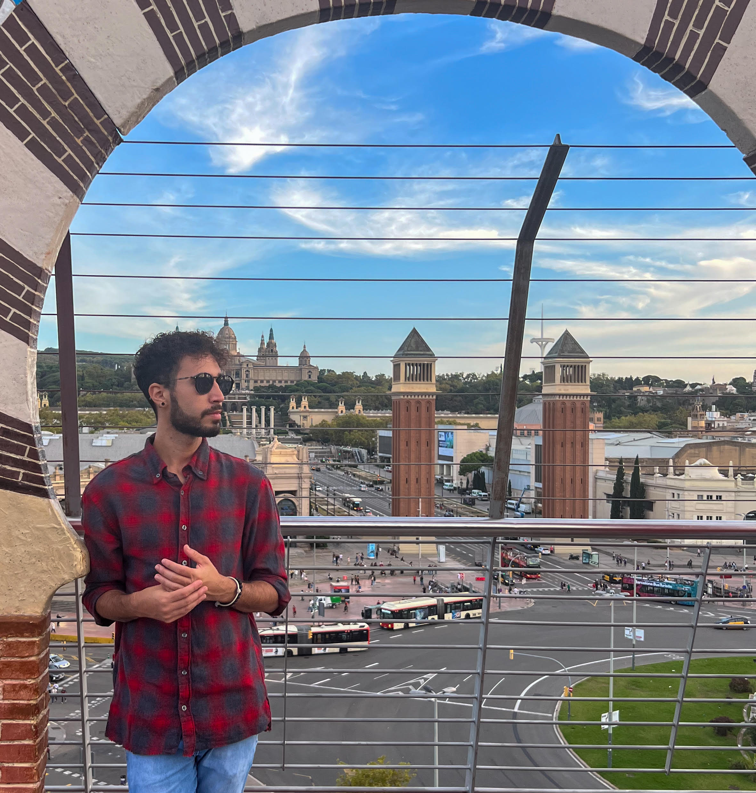

Datos académicos
- Desarrollador de aplicaciones Web | Actualmente
I.E.S La Mar
AVB Bartender de Venezuela
- Bartender Profesional | 2016
Academia Nacional Bartender de Venezuela
- Bartender Básico | 2016
Habilidades
- Inglés: A2.
- Excel: Intermedio.
- Word: Intermedio.
- PowerPoint: Intermedio.
Aptitudes
- Buena comunicación.
- Gestión de grandes equipos.
- Resolución de problemas.
- Espíritu comercial.
- Agilidad con los resultados.

Nací en Caracas, Venezuela, el 24 de octubre del 1995. Vive en
Venezuela hasta mis 22 años de edad. Luego me mudé a Lima, Perú,
en el cual viví durante 4 años. Actualmente tengo 27 años de edad
y vivo en Jávea, Alicante, España.
En Venezuela estaba estudiando Arquitectura en la Universidad
Central de Venezuela, pero tuve que dejar la carrera al mudarme a
Lima.
También en mi adolescencia llegue a hacer varios cursos, como de
dibujo, actuación, diseño y fotografía.
Me gusta mucho la fotografía, en mi
Instagram
pueden ver parte de mi trabajo, tengo conocimientos básicos de
edición en Photoshop y Lightroom.
Estoy encantado por vivir en Jávea, ya que, me encanta mucho el
mar, este último verano estuve saliendo mucho con mi tabla de
paddle surf.
Actualmente estoy estudiando 1ro. De DAW (Desarrollador de
aplicaciones Web), inicie en septiembre del 2022.
Me gustaría poder terminar mis estudios en Programación Web y
empezar estudiar Inteligencia Artificial, y convertirme en un gran
programador.